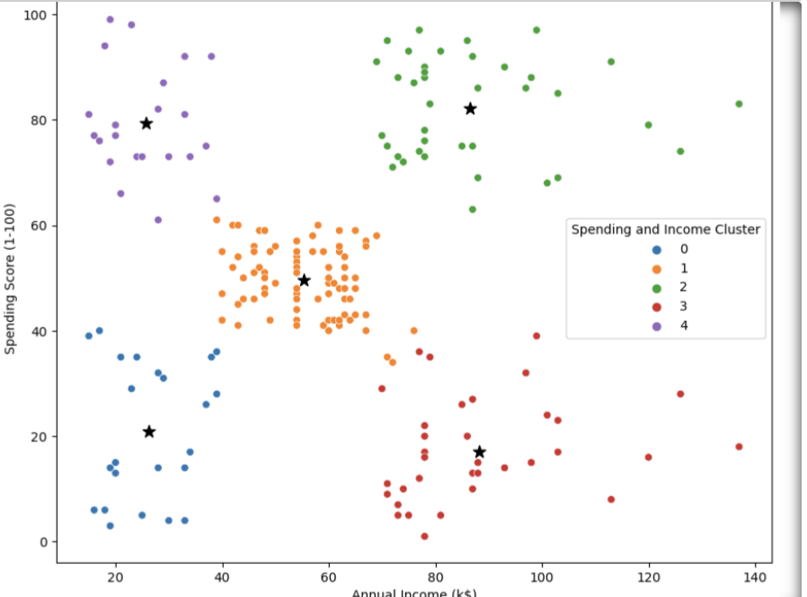
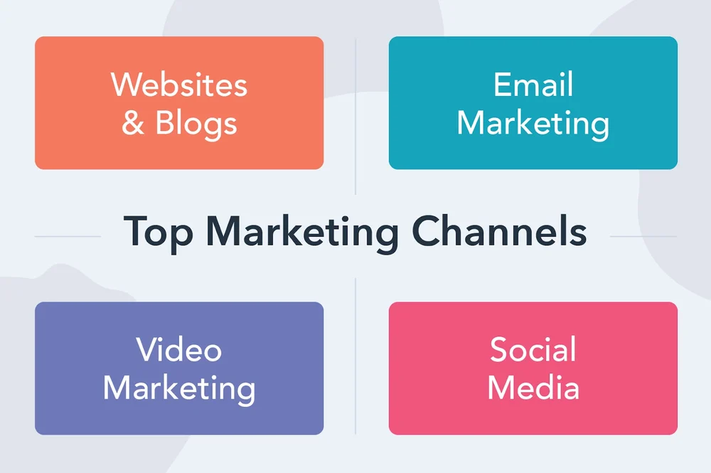
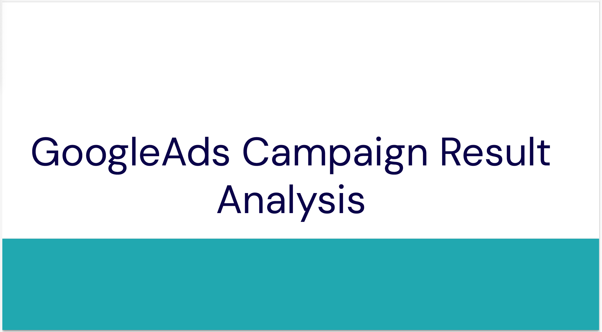
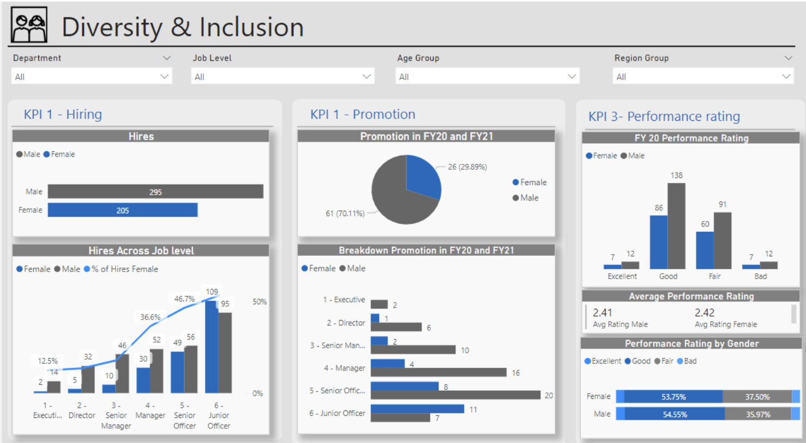
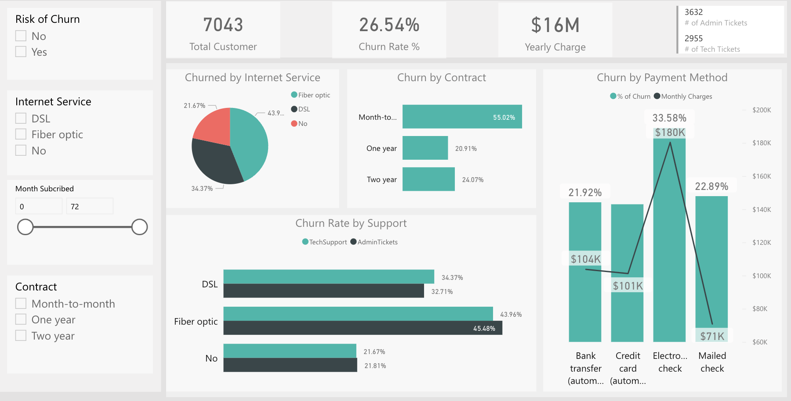
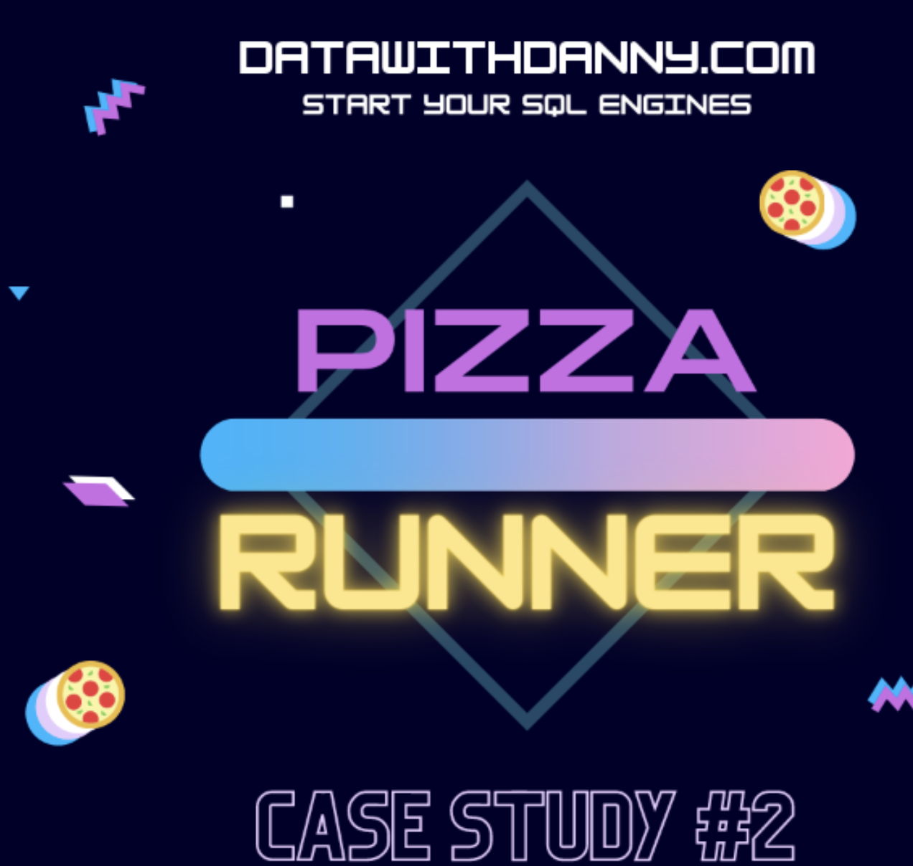
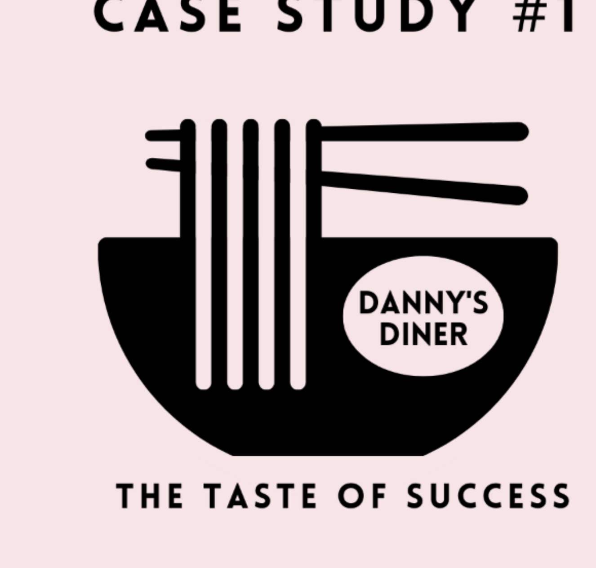

In this project, I utilized Python to perform customer segmentation and clustering using the K-means algorithm. By applying data analysis and machine learning techniques, I grouped customers based on similar characteristics and behaviors, enabling businesses to gain valuable insights about their customer base. These insights can help companies tailor their marketing strategies, product offerings, and customer experience to meet the specific needs of each customer segment. While K-means proved effective, there are other segmentation approaches worth considering, such as segmentation developed from a Persona
My project showcases my Python and machine learning skills, and how I can leverage data-driven customer segmentation to derive valuable business insights.


In this comprehensive marketing channel and ROI analysis, I meticulously evaluated the performance of various marketing channels employed by this company using Python. By carefully assessing the revenue generated and the associated costs for each channel, I was able to calculate the Return on Investment (ROI) for each marketing initiative. This analysis enabled me to identify the most cost-effective and profitable channels, allowing me to allocate resources more strategically and maximize marketing efforts. By leveraging data-driven insights from this analysis, I aim to optimize our marketing strategies, boost revenue, and enhance overall business growth while ensuring the efficient utilization of resources.

I proudly present my expertise in online marketing campaign result analysis through a comprehensive set of slides. These slides showcase my proficiency in employing essential statistical techniques, including measures of central tendency and dispersion, hypothesis testing, and linear regression. Leveraging these methods, I derive valuable insights and actionable conclusions to optimize marketing strategies effectively. With a data-driven approach and meticulous analysis, I empower businesses to make informed decisions, driving success and growth in the digital landscape.

Human Resources at a telecom company is highly into diversity and inclusion. They’ve been working hard to improve gender balance at the executive management level, but they’re not seeing any progress.
A dashboard was designed to help identity where the gap is.

In this project we defined proper KPIs,
created a dashboard for the retention manager reflecting the KPIs and analysed customer at risked of being churned.

Danny was sold on the idea of pizza production, but he knew that pizza alone was not going to help him get seed funding to expand his new Pizza Empire - so he had one more genius idea to combine with it - he was going to Uberize it - and so Pizza Runner was launched!
Danny started by recruiting “runners” to deliver fresh pizza from Pizza Runner Headquarters (otherwise known as Danny’s house) and also maxed out his credit card to pay freelance developers to build a mobile app to accept orders from customers.
Danny requires further assistance to clean his data and apply some basic calculations so he can better direct his runners and optimise Pizza Runner’s operations.

Danny seriously loves Japanese food so in the beginning of 2021, he decides to embark upon a risky venture and opens up a cute little restaurant that sells his 3 favourite foods: sushi, curry and ramen.
Danny’s Diner is in need of your assistance to help the restaurant stay afloat - the restaurant has captured some very basic data from their few months of operation but have no idea how to use their data to help them run the business.